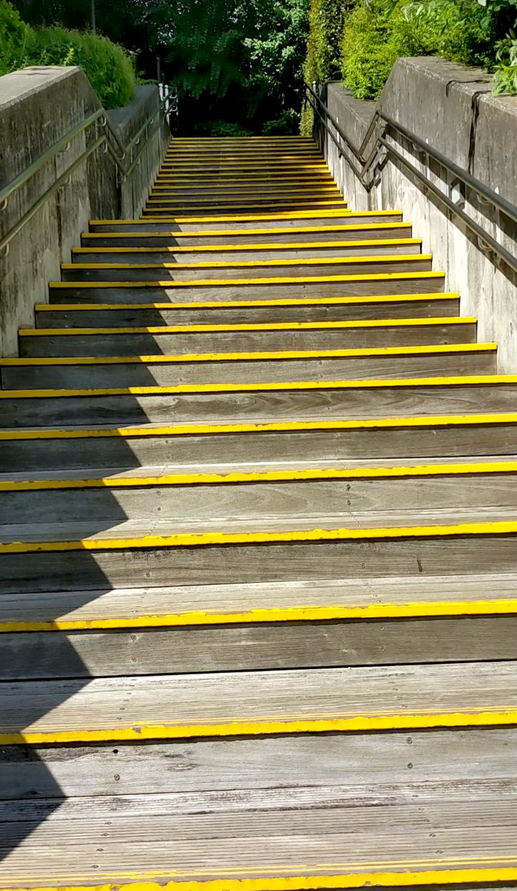
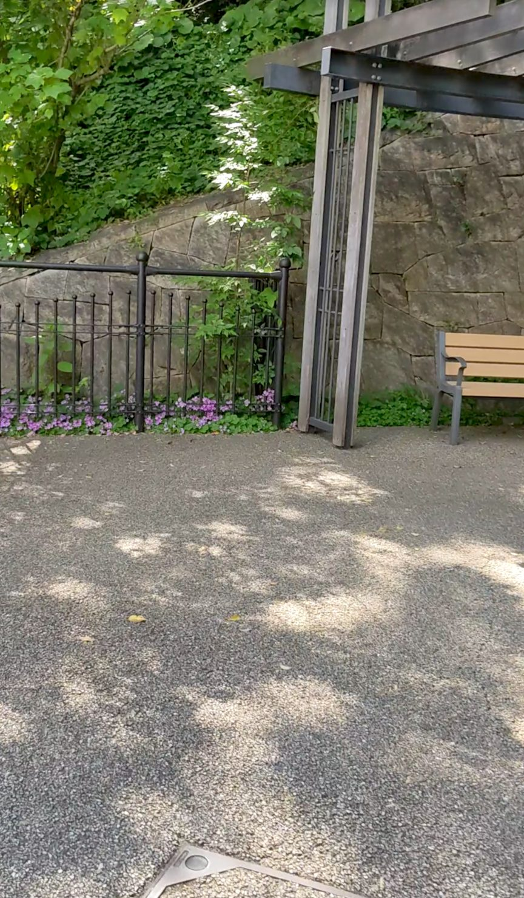
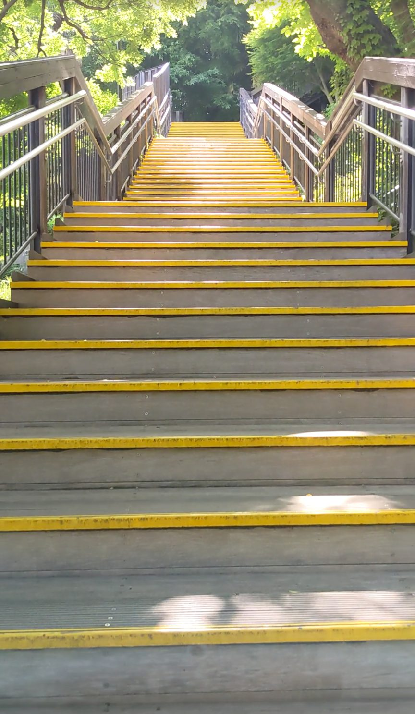
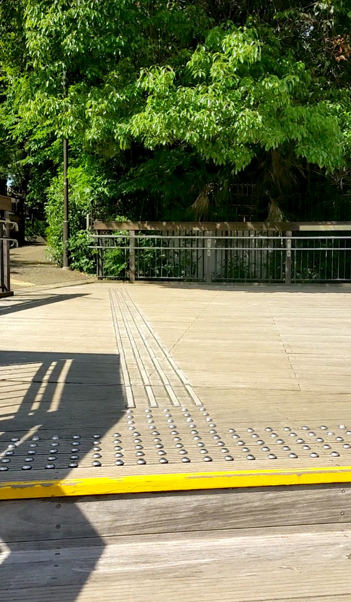
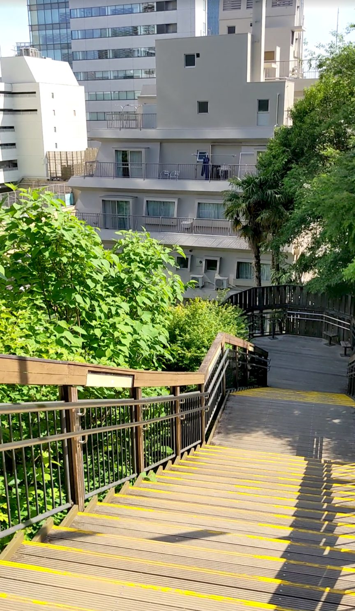

東京都港区三田にある亀塚公園は、高層ビルが立ち並ぶ都会の風景の中に、まるで裏山のように木が生い茂っている小高い場所です。遠くから見てもすぐ「あれはなんだ？」と目を引くそのギャップが、この場所の第一の魅力。都営浅草線の泉岳寺駅から徒歩約15分、136段の木製階段を登ってきました。
都営浅草線「泉岳寺駅」下車、徒歩約15分。三田の住宅街を歩いていくと、ビルの合間に木が茂った小高い丘が見えてきます。それが亀塚公園です。
階段は木製で段差は低め、黄色いラインが引いてあって足元が見やすく、非常に登りやすい設計です。途中にベンチもあるので、水分補給をしながらのんびり登れます。雨上がりは木の階段が滑りやすくなるのでご注意ください。
三田の街を歩いていると、高層ビルの合間にこんもりと木が茂った小高い丘が見えてきます。周囲がオフィスビルや住宅ばかりの中に、まるで裏山がそのまま残っているような景色。そのギャップが強烈で、近づく前から気持ちが高まります。階段の入口には、黄色いラインが入った木製の段が続いていて、都会の中とは思えないほど自然な雰囲気です。

登り始めると、段差が低くてとても歩きやすいことに気づきます。黄色いラインのおかげで足元がわかりやすく、リズムよく登っていけます。数段登ったところで踊り場があり、ベンチが置かれています。昼間ということもあってか、スーツ姿のビジネスパーソンが何名か腰かけて休んでいました。オフィス街のそばにあるからこその光景で、この公園が地元に根付いていることが伝わってきます。

さらに登っていくと、木の枝が左右から伸びてアーチを作り、木漏れ日がやわらかく差し込んでくる場所に差しかかります。黄色いラインの木製階段と、緑のアーチと、光の筋が重なって、なんとも印象的な景色です。「都心にこんな場所があるのか」という気持ちになります。

中腹を過ぎたあたりで、広めの踊り場に出ます。周囲が開けていて、空が見えて、気持ちがぱっと明るくなる感じ。木陰の心地よさと開放感が同時にやってくる、登っていてとても気持ちのいいスポットでした。

頂上まで登り切って振り返ると、木の階段の向こうに都心のビル群が広がっています。自然素材の階段と近代的な建物が同じ視界に収まる、この公園らしいコントラストのある眺めです。都会の中に、こんなにも静かで緑豊かな場所があることを、ぜひ体感しに来てほしいです。
